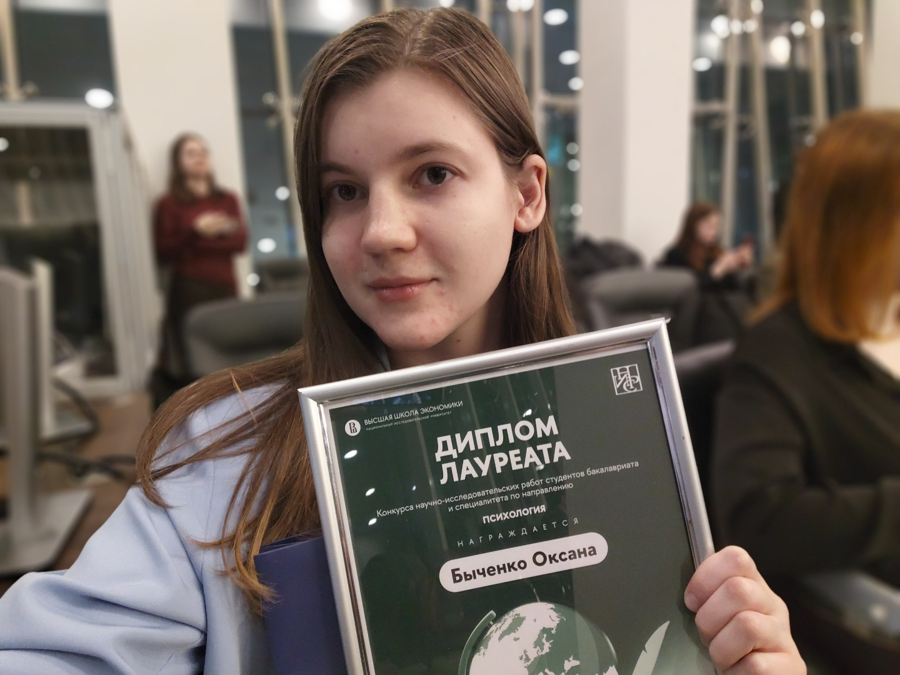

Психолог онлайн
Никакой чужой совет не поможет в той мере, в которой поможет нахождение собственного пути. Я сопровождаю, поддерживаю и помогаю вам найти именно ваши решения.

Обо мне
Я практикующий психолог-консультант. Моя работа строится на научно-обоснованных техниках и методиках. Параллельно с практикой я посещаю конференции и пишу научные работы по психологии.
Я убеждена: ни один совет извне не способен помочь в той мере, в которой поможет нахождение собственного пути. Именно поэтому я сопровождаю и помогаю вам найти свои решения — те, что будут работать в долгосрочной перспективе.
Подход
Моя цель — помочь вам вернуться в контакт с собой и осознать себя здесь и сейчас, в настоящем.
В работе использую проверенные методики и техники, подтверждённые исследованиями. Никаких домыслов — только то, что работает.
Работаем не с симптомом, а с его истоком. Клиенты находят решения, которые продолжают работать и после окончания сессий.
Я помогаю вам самим видеть альтернативы — там, где раньше казалось, что выхода нет. Вы становитесь более гибкими и самостоятельными.
Создаю пространство, где можно говорить честно — без осуждения. Супервизорское сопровождение обеспечивает качество работы.
Результаты
Клиенты отмечают, что становится легче. Большинство уже завершили работу, достигнув желаемого состояния.
«Вместе мы работаем над тем, чтобы возвращаться в контакт с собой. Я замечаю, как клиенты начинают сами видеть альтернативы там, где раньше застревали, — и жизнь будто налаживается.»
— Оксана Быченко
Становятся более гибкими и начинают сами видеть решения
Легче преодолевают трудности, которые возникают
Ощущают, что жизнь налаживается
Возвращаются в контакт с собой и живут в настоящем
Контент о психологии
Делюсь знаниями о психологии — доступно и на основе науки.
Мотивация
Психология в кино
Детская психология
Запись
Формат — онлайн, по видеосвязи.
Стоимость сессии — 1 500 ₽.
Если мой подход откликается, я буду рада поработать с вами.
Спасибо, я свяжусь с вами в ближайшее время.